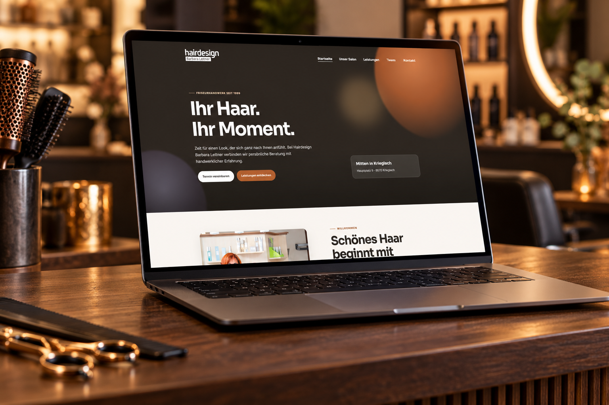

Referenz · 2026 · Krieglach
Neuburger Metalltechnik
Ein Webauftritt für präzise Handwerksarbeit, technisches Fachwissen und zuverlässige Lösungen im Metallbereich.
Projektbilder folgen – dieser visuelle Platzhalter wird durch echte Werkstatt- und Projektaufnahmen ersetzt.
Das Projekt
Technik, die Vertrauen schafft.
Neuburger Metalltechnik baut auf handwerklicher Tradition und umfassender Erfahrung im Metallbereich auf.
Gegründet von Marvin Neuburger, ausgebildeter Maschinenbautechniker und Inhaber, verbindet das Unternehmen technisches Fachwissen mit sauberer, präziser und zuverlässiger Arbeitsweise. Die Website macht diese Werte auf den ersten Blick greifbar.
Website besuchenNächstes Projekt
Hairdesign Barbara Leitner ansehen.
